PUMPVISION · SHREE PETROLEUM · RO 206858
कर्मचारी गाइड
फ़ोन पर Pumpvision ऐप में रोज़ के दो काम — उधार बिक्री और शिफ्ट बंद करना।
1. उधार बिक्री दर्ज करें
कब: हर बार जब उधार खाते वाला ग्राहक तेल ले — उसी समय, गाड़ी जाने से पहले।
2. शिफ्ट बंद करें
कब: हर सुबह 06:00 बजे के बाद — पिछले दिन की शिफ्ट के लिए, सभी मशीनों की मीटर रीडिंग।
रोज़ का क्रम
| सुबह 06:00 के बाद | पिछली शिफ्ट बंद करें: हर मशीन (नोज़ल) के मीटर की आखिरी रीडिंग भरें और शिफ्ट जमा करें। (पेज 6–8) |
| पूरे दिन | हर उधार बिक्री तुरंत ऐप में दर्ज करें और ग्राहक को साइन की हुई पर्ची दें। (पेज 3–5) |
| काम खत्म होने पर | साझा फ़ोन हो तो प्रोफ़ाइल → बाहर निकलें दबाएँ। |
शिफ्ट का मतलब: एक दिन सुबह 06:00 से अगले दिन सुबह 06:00 तक। ऐप अपने आप पिछले दिन की शिफ्ट खोलता है।
1. उधार बिक्री दर्ज करना
उधार खाते वाला ग्राहक तेल ले, तो उसी समय दर्ज करें। बाद के लिए न छोड़ें।
- होम पर उधार बिक्री दर्ज करें दबाएँ।
- ग्राहक ढूँढें: ऊपर के डिब्बे में नाम, ID या गाड़ी नंबर लिखें। ग्राहक पर दबाएँ।
- ग्राहक लिस्ट में नहीं है, या उसके नाम के आगे ताला है — तो उधार न दें, मैनेजर से पूछें।
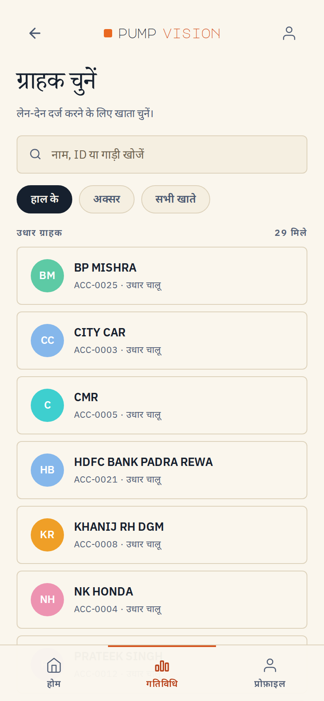
1 ग्राहकों की लिस्ट
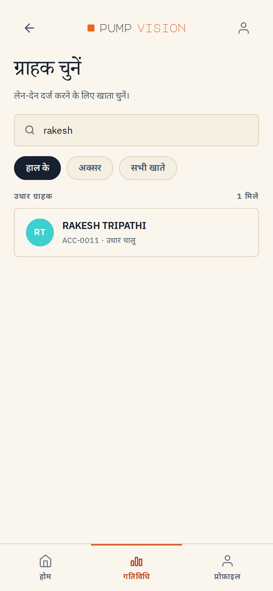
2 नाम लिखकर खोजें
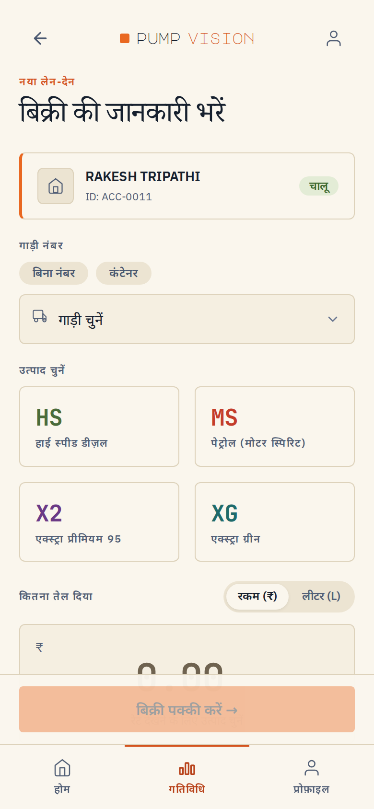
3 बिक्री की जानकारी वाली स्क्रीन
1. उधार बिक्री (आगे)
- गाड़ी नंबर चुनें। नंबर न हो तो बिना नंबर दबाएँ।
- तेल चुनें: HS (डीज़ल), MS (पेट्रोल), X2 (प्रीमियम 95), XG (एक्स्ट्रा ग्रीन) या CNG (अगला पेज)।
- रकम (₹) या लीटर (L) चुनें, फिर मशीन पर जो दिखा वही संख्या भरें। रेट ऐप अपने आप लगाता है।
- बिक्री पक्की करें दबाएँ।
- हरा ✓ दिखेगा। रकम, लीटर और रेट एक बार देख लें। ग्राहक को साइन की हुई पर्ची दें।
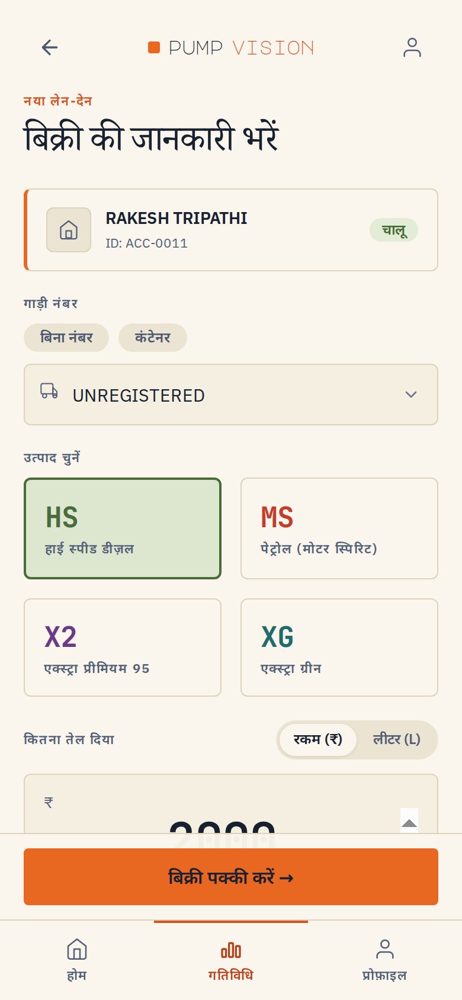
4–5 गाड़ी और तेल चुना
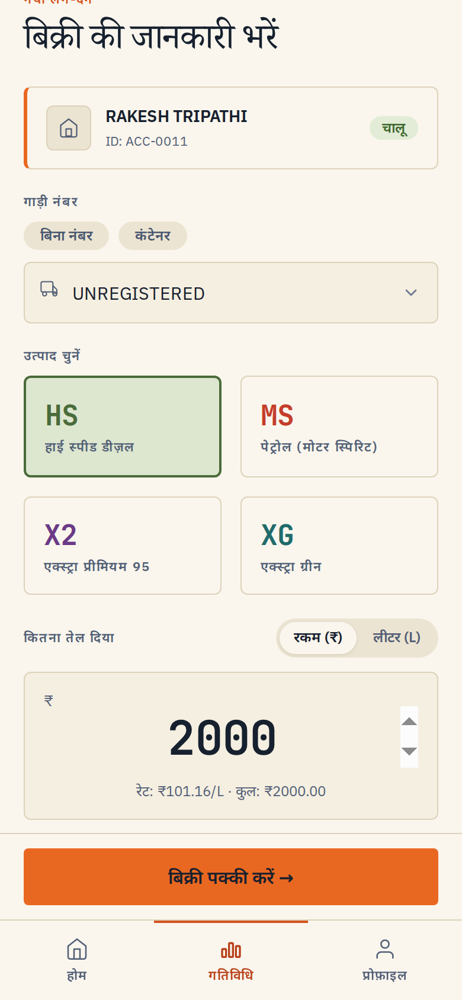
6–7 रकम भरें, फिर बिक्री पक्की करें
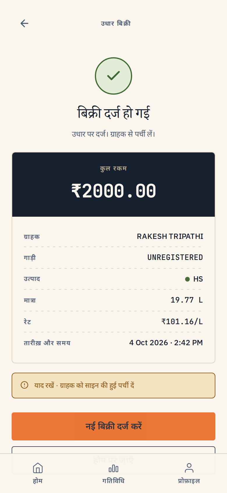
8 बिक्री दर्ज हो गई — पर्ची दें
गलती हो जाए तो: वही बिक्री दोबारा दर्ज न करें। तुरंत मैनेजर को बताएं — ग्राहक का नाम, रकम और समय।
1. CNG की उधार बिक्री
CNG किलो (kg) में बिकती है। बाकी तरीका वही है।
- ग्राहक और गाड़ी चुनें (ऊपर जैसा)।
- नीचे वाला नीला CNG डिब्बा दबाएँ।
- रकम (₹) या किलो (kg) चुनें और मशीन पर दिखी संख्या भरें। रेट (₹/kg) ऐप अपने आप लगाता है।
- बिक्री पक्की करें दबाएँ। किलो और रकम जाँचें, पर्ची दें।
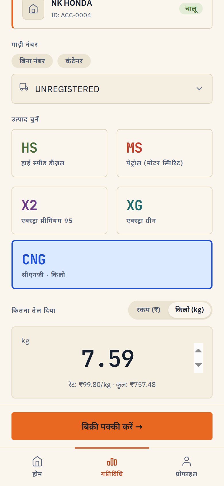
2–3 CNG चुनी, किलो भरे
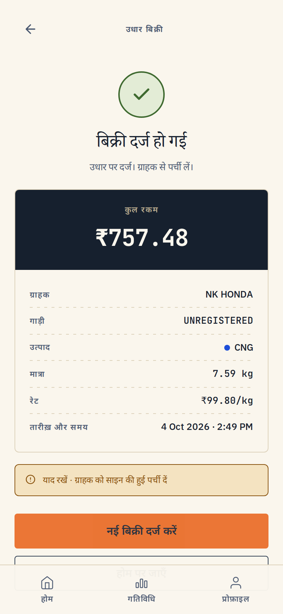
4 बिक्री दर्ज — किलो में
रेट गलत दिखे तो बिक्री न करें — मालिक या मैनेजर को बताएं। CNG का रेट मालिक ऐप में बदलते हैं।
2. शिफ्ट बंद करना
हर सुबह 06:00 के बाद। हर मशीन (नोज़ल) के मीटर पर जो आखिरी रीडिंग है, वही भरें।
- होम पर शिफ्ट बंद करें दबाएँ। सभी तेल दिखेंगे।
- HS दबाएँ। दो मशीनें दिखेंगी: HS1 (DU 9) और HS2 (DU 15)। ऊपर शुरुआती रीडिंग पहले से भरी है।
- HS1 में रीडिंग भरने के लिए दबाएँ दबाएँ। मीटर की पूरी रीडिंग नंबर-पैड से भरें — दशमलव (.) के बाद वाले अंक भी।
- नीचे बिका तेल दिखेगा। यह ठीक लगे तो सेव करके पक्का करें दबाएँ। बहुत ज़्यादा या कम लगे तो मीटर दोबारा देखें।
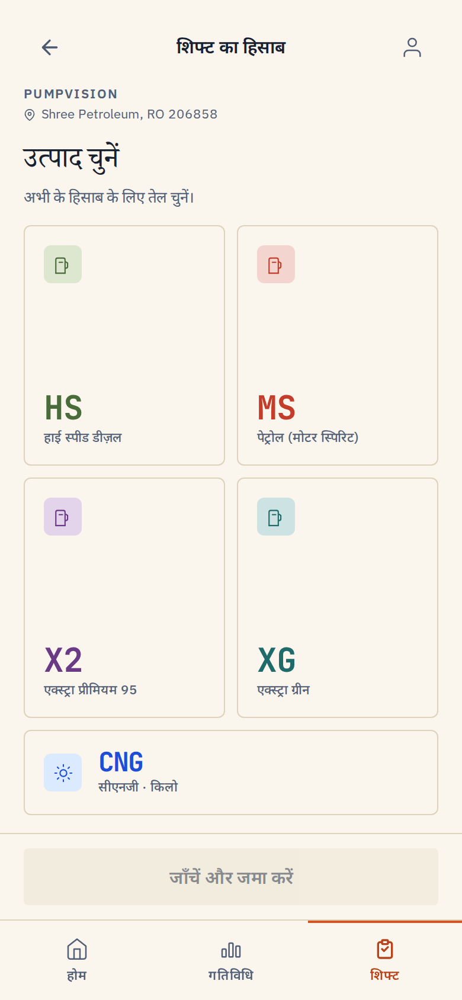
1 तेल चुनें
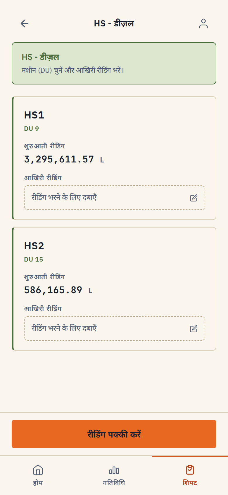
2 HS की दोनों मशीनें
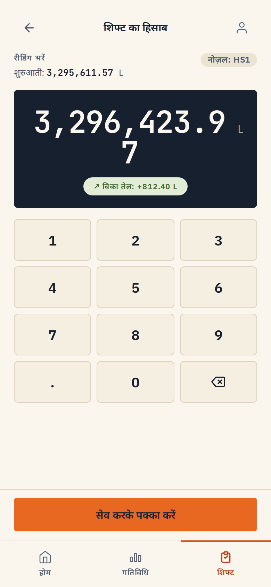
3–4 रीडिंग भरी, बिका तेल देखें
आखिरी रीडिंग शुरुआती से कम नहीं हो सकती — ऐसा हो तो ऐप रीडिंग नहीं लेगा। मीटर दोबारा पढ़ें।